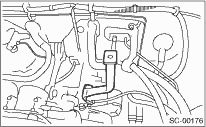
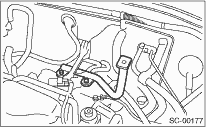
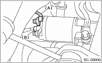

1. Disconnect the ground cable from battery.

2. Remove the collector cover. (Turbo model)
3. Remove the air intake chamber. (Non-turbo model)

4. Remove the intercooler. (Turbo model)
5. Remove the air intake chamber stay. (Non-turbo model)
• MT model

• AT model

6. Disconnect the connector and terminal from starter.

|
(A) |
Terminal |
|
(B) |
Connector |
7. Remove the starter from transmission.
NOTE:
For the MT model, a bolt is used in place (A).